ZYX Technology가 국내 기술로 개발한 범용 CAD 소프트웨어
AutoCAD 완벽 호환 · 최대 63% 비용 절감 · 속도 286% 향상
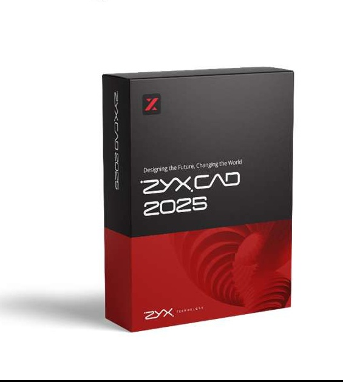
1위 CAD사의 잦은 정책 변경과 지속적인 가격 인상으로
89% 이상의 기업이 대안 CAD 도입을 검토하고 있습니다.
영구 라이선스 단종
네트워크 버전 지원 중단
가격 인상 및 단속 공문 배포
기업의 타 CAD 구매·검토 의향
(2024년 생산·제조 전문 매거진 설문)
KOLAS 인증 시험으로 검증된 성능 비교 결과입니다.
70.2MB DWG 파일 오픈 시간 (5회 평균)
70.2MB DWG 객체 복사 테스트 (6회)
다중 CPU 활용, 메모리 최적화, 100% 파일 호환성까지
전문 CAD 작업에 필요한 모든 기능을 갖추었습니다.
여러 CPU에서 연산을 지원하여 프로그램 속도를 극적으로 향상시킵니다.
고용량 도면도 빠르게 열리며 장시간 작업해도 안정적인 속도를 유지합니다.
DWG, DXF, DWF, PDF 등 주요 CAD 포맷을 완벽하게 지원합니다.
건축 및 설계 데이터 통합을 위한 IFC 파일 완벽 호환을 제공합니다.
기존 AutoCAD Lisp, PGP 파일을 그대로 사용할 수 있습니다.
리본 메뉴 커스터마이징, 3D 기즈모, 멀티윈도우 지원으로 편리한 작업 환경을 제공합니다.
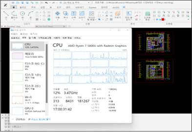
다중 CPU 지원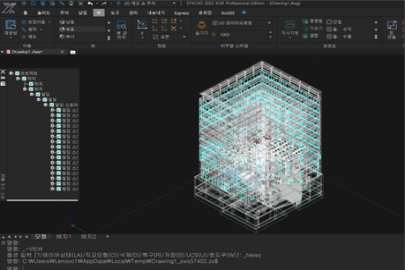
3D 모델링 / IFC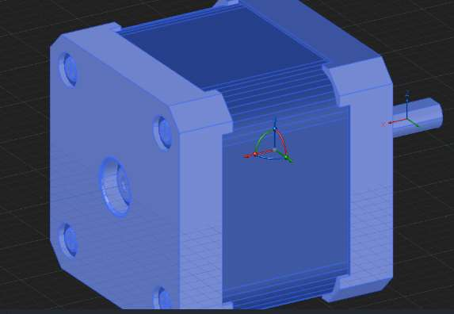
높은 디스플레이 품질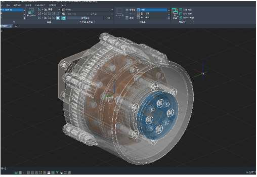
친화적 UI / 3D 기즈모실제 현장에서 ZYXCAD를 사용하는 분들의 생생한 후기입니다.
AutoCAD에서 전환했는데 UI·명령어가 똑같아 첫날부터 바로 사용했습니다. 기존 LISP 파일과 DWG 도면이 100% 호환되어 추가 변환 없이 그대로 활용할 수 있었고, 팀원 전체가 별도 교육 없이 바로 적응했습니다.
3년 기준으로 비교하면 AutoCAD 대비 약 63% 비용이 절감되었습니다. 영구 라이선스로 전환한 뒤 구독료 부담이 사라졌고, 절약한 비용을 다른 업무에 투자할 수 있어 사무소 경영에 실질적인 도움이 되고 있습니다.
CadMaster, Cycad 등 써드파티 툴과의 연동이 완벽하고, 리본 메뉴 커스터마이징으로 자주 쓰는 명령어를 한 곳에 모아 작업 속도가 크게 향상됐습니다. 대용량 도면도 부드럽게 열리고 장시간 작업해도 안정적입니다.
국내 자체 개발 제품이라 기술 지원이 빠르고 친절합니다. 문제가 생기면 원격 지원으로 당일 해결됩니다. 무엇보다 불법 소프트웨어 단속 걱정 없이 정품을 합리적 비용으로 사용할 수 있다는 점이 가장 마음에 듭니다.
토목, 건축 및 유틸리티 등 400여 개의 기능을 가진 응용 프로그램 Works가 기본 탑재되어 있습니다.
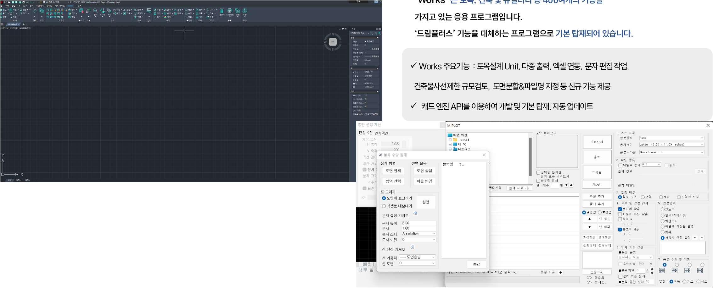
토목 설계에 특화된 전문 기능 모음
여러 도면을 한 번에 출력하는 효율적인 기능
엑셀 파일과 도면 데이터를 손쉽게 연동
도면 내 문자를 빠르고 정확하게 편집
정북 일조권 사선 제한 자동 계산 및 검토
대형 도면을 분할하고 파일명을 자동 지정
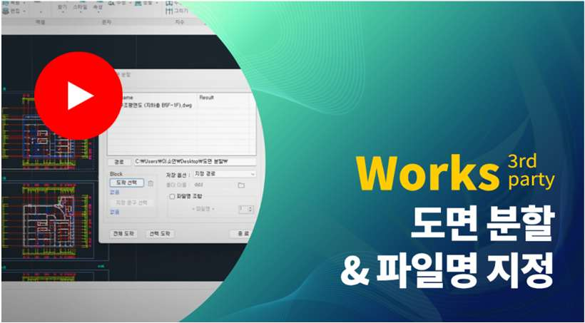
도면 분할 기능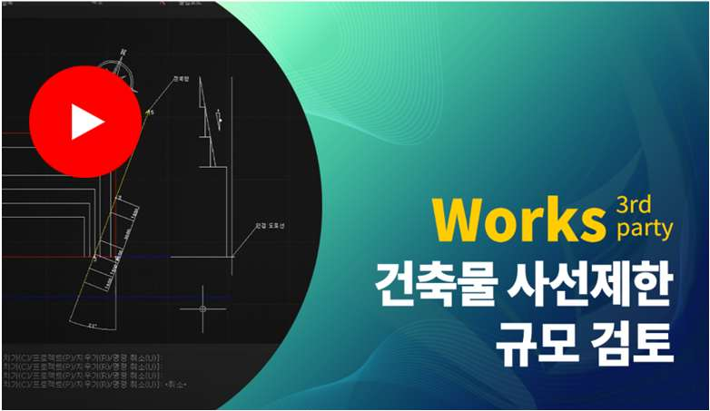
정북 일조권 사선 제한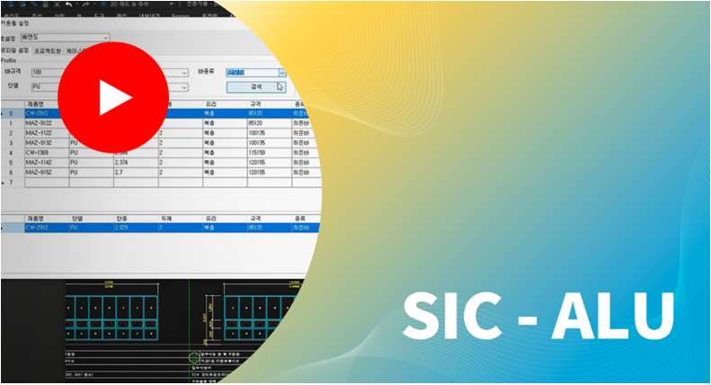
SIC ALU 창호 설계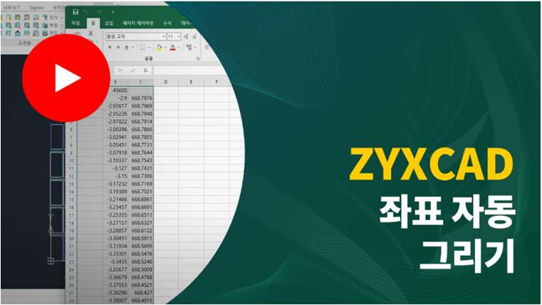
도면 좌표 자동 추출영구 / 임대
영구 / 임대
건축 · 건설 · 엔지니어링
제조 · 기계 · 설비
공공기관 · 교육기관
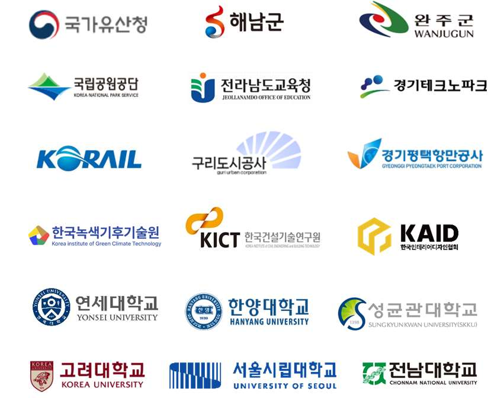
홈페이지 · 네이버 카페 · 블로그
원격 지원 · 방문 지원 · 해외 원격 지원
온라인(동영상) · 오프라인(본사 교육)
09:00 ~ 18:00 (평일)